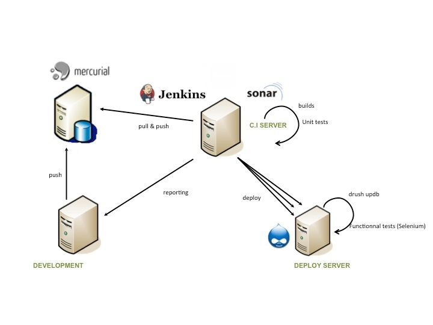

View the Project on GitHub atouchard/drupal-ci
TweeterThis project is a fork of Template for Jenkins Jobs for PHP Projects by Sebastian Bergmann suitable for Drupal 6.
For all your Drupal projects, it's not necessary to test Drupal Core and contrib modules.
The default configuration of this project suppose you have your custom code in /src/sites/all/modules/custom and /src/sites/all/themes folders. You can change these paths in /properties/build.properties
Below, you can watch a typical architecture of continuous integration :

We use Mercurial for versionning, Jenkins the continuous integration server and Sonar to manage code quality.
This project doesn't use the same configuration than Template for Jenkins Jobs for PHP Projects because we use Drupal 6 (PHP 5.2).
We need specific version of PEAR plugins and we use Doxygen for documentation with the help of Matt Farina instead of phpdox (PHP 5.3).
To start, this is a typical installation for PEAR :
pear config-create ~/ .pearrc
mkdir -p ~/pear/lib
vi .bashrc
PATH=$HOME/pear:$PATH
export PATH
pear install -o PEAR
After that, you can add channels and install plugins (All of your plugins will go under the ~/pear folder).
pear channel-update pear.php.net
pear upgrade-all
pear channel-discover pear.pdepend.org
pear channel-discover pear.phpmd.org
pear channel-discover pear.phpunit.de
pear channel-discover components.ez.no
pear channel-discover pear.symfony-project.com
pear install channel://pear.php.net/Net_URL2-0.3.1
pear install channel://pear.php.net/HTTP_Request2-2.0.0RC1
pear install --alldeps pdepend/PHP_Depend
pear install --alldeps phpmd/PHP_PMD
pear install phpunit/phpcpd-1.3.1
pear install --alldeps phpunit/phploc
pear install --alldeps PHPDocumentor
pear install --alldeps PHP_CodeSniffer
pear install --alldeps phpunit/PHP_CodeBrowser
pear install phpunit/PHPUnit-3.5.5
You can view all plugins informations at phpqatools.org
To install Jenkins, go to the Jenkins website, download application and follow the instructions.
For example, on Ubuntu/Debian :
wget -q -O - http://pkg.jenkins-ci.org/debian/jenkins-ci.org.key | sudo apt-key add -
deb http://pkg.jenkins-ci.org/debian binary/
sudo apt-get update
sudo apt-get install jenkins
sudo sh -c 'echo deb http://pkg.jenkins-ci.org/debian binary/ > /etc/apt/sources.list.d/jenkins.list'
sudo aptitude update
sudo aptitude install jenkins
Then, run Jenkins on a specific port (--httpPort) :
nohup java -jar jenkins.war --httpPort=2000 > ~/logs/jenkins.log 2>&1By default, Jenkins run on port 8080.
You can start Jenkins with other command line parameters.
Go to http://127.0.0.1:2000 to see Jenkins alive.
You can use Jenkins client to download plugins easily :
wget http://127.0.0.1:2000/jnlpJars/jenkins-cli.jarNow, install Jenkins useful plugins :
java -jar jenkins-cli.jar -s http://127.0.0.1:2000 install-plugin checkstyle
java -jar jenkins-cli.jar -s http://127.0.0.1:2000 install-plugin cloverphp
java -jar jenkins-cli.jar -s http://127.0.0.1:2000 install-plugin dry
java -jar jenkins-cli.jar -s http://127.0.0.1:2000 install-plugin htmlpublisher
java -jar jenkins-cli.jar -s http://127.0.0.1:2000 install-plugin jdepend
java -jar jenkins-cli.jar -s http://127.0.0.1:2000 install-plugin plot
java -jar jenkins-cli.jar -s http://127.0.0.1:2000 install-plugin pmd
java -jar jenkins-cli.jar -s http://127.0.0.1:2000 install-plugin violations
java -jar jenkins-cli.jar -s http://127.0.0.1:2000 install-plugin xunit
Then, restart Jenkins safely :
java -jar jenkins-cli.jar -s http://127.0.0.1:2000 safe-restartWith Selenium, you can create and execute functionnal tests of your code source.
First, install the Selenium server :
mkdir ~/SELENIUM
cd ~/SELENIUM
wget http://selenium.googlecode.com/files/selenium-server-standalone-2.3.0.jar
ln -s selenium-server-standalone-2.3.0.jar selenium-server.jar
To launch your Selenium PHPUnit tests, run the Selenium server :
java -jar ~/SELENIUM/selenium-server.jar -port 4445
This is a basic Selenium test in PHPUnit format (/tests/selenium/phpunit/Example.php) :
<?php
require_once 'PHPUnit/Extensions/SeleniumTestCase.php';
class Example extends PHPUnit_Extensions_SeleniumTestCase {
protected function setUp() {
$this->setHost("127.0.0.1");
$this->setPort(4445);
$this->setBrowser("*chrome");
$this->setBrowserUrl("http://www.inserthtml.com/");
}
public function testMyTestCase() {
$this->open("/");
$this->type("xpath=(//input[@id='s'])[2]", "mobile");
$this->click("css=#search > form > input[type=\"submit\"]");
$this->waitForPageToLoad("30000");
$this->verifyTextPresent("Creating a Mobile Web Application Part 1: Mobile Design");
}
}
Run this Selenium test :
phpunit tests/selenium/phpunit/Example
In your Jenkins job configuration, add this script task to run :
export DISPLAY=":99" && java -jar ~/SELENIUM/selenium-server.jar -singleWindow -ensureCleanSession -browserSessionReuse -htmlSuite *firefox "http://yoursite/" "$WORKSPACE/tests/selenium/suites/Suite.html" "$WORKSPACE/tests/selenium/logs/selenium.html"
If you want more informations, you can go to this article.
Download the seleniumhq plugin for Jenkins. If you have the Jenkins client, you can run this command :
java -jar jenkins-cli.jar -s http://127.0.0.1:2000 install-plugin seleniumhqThen, restart Jenkins safely :
java -jar jenkins-cli.jar -s http://127.0.0.1:2000 safe-restartFeel free to contact me on github for more informations or fork it !